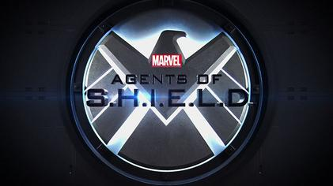

 «Аге́нты Щ. И.Т.» (англ. Agents of S.H.I.E.L.D.) — американский супергеройский телесериал, созданный Джоссом Уидоном и основанный на одноимённом комиксе компании Marvel о вымышленной организации по борьбе с преступностью, является частью кинематографической вселенной Marvel. История начинается с того, что агент Фил Колсон (Кларк Грегг), который выжил после событий фильма «Мстители», работает в «Щ. И.Т.» вместе с новой командой.
Сериал повествует, о том, как команда людей применяют свои умения и особые таланты. Они ведут войну против жестоких и коварных злодеев. Иногда злодеями являются личности, которые являются не совсем обычными людьми, они имеют особые способности. Сами главные герои это прежде всего никому неизвестные агенты, которые помогают охранять жителей земли от всевозможных угроз. Некоторые из агентов щита, обладают не только уникальными навыками, но сверх способностями. Сами агенты работают в одной команде и очень хорошо знают, что сообща они могут выполнить самое опасное задание. Руководство США категорически против того, чтобы на Земле существовали какие-либо мутанты, люди с особыми способностями. Именно для этого была организована специальная команда, которая была названа ЩИТ.
Директором щита выступает Фил Колсон, который в прошлом сражался на стороне мстителей. Теперь же этот человек смог создать свою собственную команду, благодаря которой человечество может спать спокойно и не бояться. Каждый день агенты щита выполняют особо опасные миссии, их основная задача это прежде всего безопасность, для всего человечества. Действия сериала начинаю развиваться, когда город был окружен мутировавшими существами, которые прибыли на Землю. Но не все настроены против них, некоторые готовы помогать людям с уникальными талантами и сотрудничать с ними. Каждый день агенты щита выполняют особо опасные миссии, их основная задача это прежде всего безопасность, для всего человечества. Вскоре главным героям придется столкнутся с новыми злодеями, начиная с такой известной организацией как Гидра, и заканчивая уникальной компьютерной программой, которая в последствии захочет поработить все человечество.
В августе 2009 года The Walt Disney Company, владеющая ABC, приобрела Marvel Entertainment за $4 миллиарда и вскоре
генеральный директор Disney объявил о своих планах включать медиа-франшизы студии на свои отраслевые платформы, в том
числе и на телевидение. После нескольких неудачных попыток со сценариями для телеверсий ряда комиксов, наконец, в
июле 2012 года Marvel Television вступил в сотрудничество с ABC с целью сделать телешоу в Кинематографической вселенной
Marvel. Планов о каком-то конкретном комиксе не было, и вся идея сводилась к сценариям полицейского шоу с «высокой
концепцией».
В августе 2012 года было объявлено, что режиссёр фильма «Мстители» Джосс Уидон занял место автора разработки,
одного из исполнительных продюсеров, а также режиссёра пилотного эпизода. Спустя несколько недель после
этого ABC сразу заказал съёмки пилота и по словам Уидона сериал будет существовать автономно от франшизы «Мстители»
чтобы его могли наблюдать те, кто ранее не смотрел проекты студии. В то же время по заявлениям Уидона шоу будет сделано
в стиле франшизы и поклонникам комиксов также должно привлечь аудиторию.